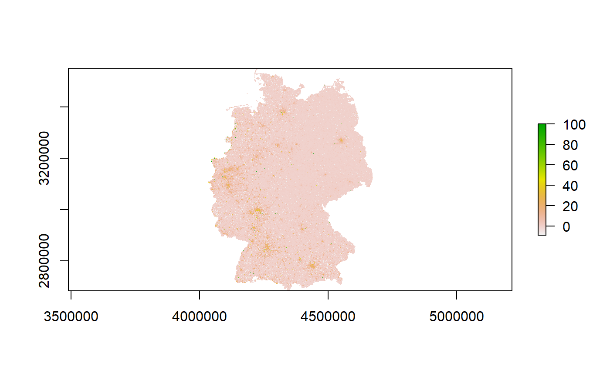
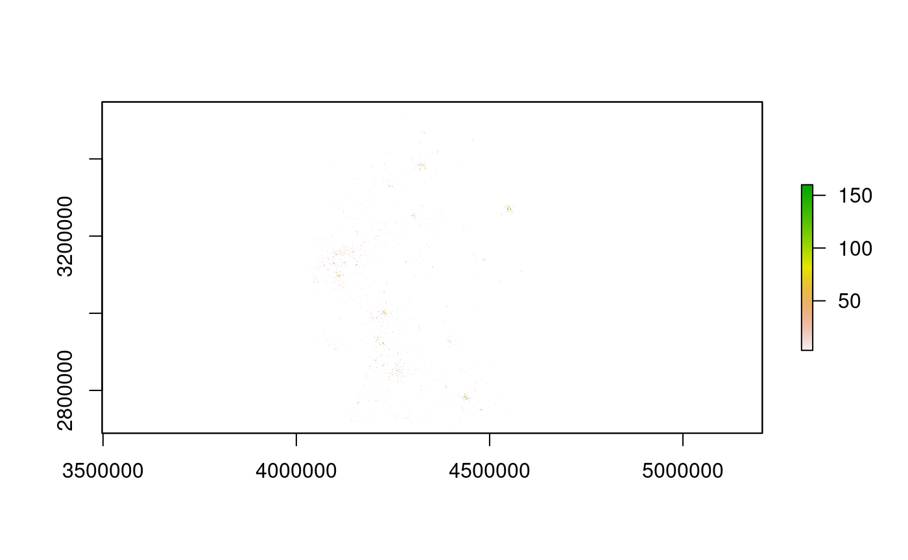

using-z11.RmdThe z11 package provides an R-interface to the geospatial raster data of the German Census 2011. z11 can be used to list all available attributes from the Census (1 km² attributes and 1-hectare attribute) and import them either as simple features spatial points object or as raster object with the resolution of the corresponding attribute. I felt that such a package may be of interest for other userRs since the Census data ‘only’ exists as CSV data dump on the internet. However, to use them in a Geographic Information System (GIS), the data must be prepared, which is time-consuming and computationally demanding. As such, the package aims to fill the gap of making the data easily accessible by providing a straightforward method.
Generally, the German Census 2011 data are available under a Data licence Germany – attribution – version 2.0 and can be manipulated and openly shared. Yet, as part of this package, use them at your own risk and do not take the results of the functions for granted.
remotes::install_github("StefanJuenger/z11")The functions in the package rely on data prepared in another repository. If you want to work locally, please download them first and follow the instructions of the manual.
After installing, the package can be loaded using R’s standard method:
library(z11)1 km² data were the first data published in 2015. While they comprise fewer attributes than the 1 hectare ones (see below), the data are in a way more easy to use format (see also the z11 package’s vignette about the initial data preparation [still in the works]). You can browse all available attributes by using the following function.
z11::z11_list_1km_attributes()
#> [1] "Einwohner_cat" "Frauen_A_cat" "Alter_D_cat"
#> [4] "unter18_A_cat" "ab65_A_cat" "Auslaender_A_cat"
#> [7] "HHGroesse_D_cat" "Leerstandsquote_cat" "Wohnfl_Bew_D_cat"
#> [10] "Wohnfl_Whg_D_cat" "Einwohner" "Frauen_A"
#> [13] "Alter_D" "unter18_A" "ab65_A"
#> [16] "Auslaender_A" "HHGroesse_D" "Leerstandsquote"
#> [19] "Wohnfl_Bew_D" "Wohnfl_Whg_D"Thus, in sum we can use 20 different census attributes of the size of 1 km². Please note that some of the attributes are also duplicated, denoted by the _cat-suffix in the attribute name. These attributes may be less precise, but they comprise fewer missing values than the continuous attributes. In any case, for more details about the actual attributes, refer to the official documentation of the German Census 2011 at https://www.zensus2011.de.
Now, if we want to load one of the attributes as a raster layer, we can use the z11::z11_get_1km_attribute() function. For example, for importing information on immigrant rates on a 1 km² grid level, we could use the following command:
immigrants_1km <-
z11::z11_get_1km_attribute(Auslaender_A)
#> Warning in showSRID(uprojargs, format = "PROJ", multiline = "NO", prefer_proj =
#> prefer_proj): Discarded datum Unknown based on GRS80 ellipsoid in CRS definition
#> Warning in showSRID(SRS_string, format = "PROJ", multiline = "NO", prefer_proj =
#> prefer_proj): Discarded datum European Terrestrial Reference System 1989 in CRS
#> definitionVoilà, we got this information as a standard raster layer (class("Raster")) as specified in the raster package:
immigrants_1km
#> class : RasterLayer
#> dimensions : 867, 641, 555747 (nrow, ncol, ncell)
#> resolution : 1000, 1000 (x, y)
#> extent : 4031500, 4672500, 2684500, 3551500 (xmin, xmax, ymin, ymax)
#> crs : +proj=laea +lat_0=52 +lon_0=10 +x_0=4321000 +y_0=3210000 +ellps=GRS80 +units=m +no_defs
#> source : memory
#> names : layer
#> values : -9, 100 (min, max)Therefore, we can also use the raster package’s standard plotting procedures:
raster::plot(immigrants_1km)
Suppose we do not want to work with raster data. Instead, we aim to use the raster grid cell’s centroid coordinates. In that case, we can also load the data as a simple features data frame with point geometries as specified in the sf package by simply using the option as_raster:
immigrants_1km_sf <-
z11::z11_get_1km_attribute(Auslaender_A, as_raster = FALSE)Here we go:
immigrants_1km_sf
#> Simple feature collection with 361478 features and 1 field
#> geometry type: POINT
#> dimension: XY
#> bbox: xmin: 4031500 ymin: 2684500 xmax: 4672500 ymax: 3551500
#> projected CRS: ETRS89-extended / LAEA Europe
#> # A tibble: 361,478 x 2
#> Auslaender_A geometry
#> <dbl> <POINT [m]>
#> 1 -1 (4334500 2684500)
#> 2 -1 (4335500 2684500)
#> 3 -1 (4336500 2684500)
#> 4 -1 (4337500 2684500)
#> 5 -1 (4338500 2684500)
#> 6 -1 (4339500 2684500)
#> 7 -1 (4334500 2685500)
#> 8 -1 (4335500 2685500)
#> 9 -1 (4336500 2685500)
#> 10 -1 (4337500 2685500)
#> # … with 361,468 more rowsIn 2018, destatis also published Census data on a 1-hectare grid level. This 100m \(\times\) 100m data provides a more fine-grained level of information for Germany’s population. Moreover, the data comprise way more attributes than the 1 km² one, including details on buildings and even heater types. Again, we can list all available attributes using a specialized function:
z11::z11_list_100m_attributes()
#> [1] "ALTER_10JG_1" "ALTER_10JG_2"
#> [3] "ALTER_10JG_3" "ALTER_10JG_4"
#> [5] "ALTER_10JG_5" "ALTER_10JG_6"
#> [7] "ALTER_10JG_7" "ALTER_10JG_8"
#> [9] "ALTER_10JG_9" "ALTER_KURZ_1"
#> [11] "ALTER_KURZ_2" "ALTER_KURZ_3"
#> [13] "ALTER_KURZ_4" "ALTER_KURZ_5"
#> [15] "BAUJAHR_MZ_1" "BAUJAHR_MZ_10"
#> [17] "BAUJAHR_MZ_2" "BAUJAHR_MZ_3"
#> [19] "BAUJAHR_MZ_4" "BAUJAHR_MZ_5"
#> [21] "BAUJAHR_MZ_6" "BAUJAHR_MZ_7"
#> [23] "BAUJAHR_MZ_8" "BAUJAHR_MZ_9"
#> [25] "EIGENTUM_1" "EIGENTUM_2"
#> [27] "EIGENTUM_3" "EIGENTUM_4"
#> [29] "EIGENTUM_5" "EIGENTUM_6"
#> [31] "EIGENTUM_7" "EIGENTUM_8"
#> [33] "Einwohner" "FAMGROESS_KLASS_1"
#> [35] "FAMGROESS_KLASS_2" "FAMGROESS_KLASS_3"
#> [37] "FAMGROESS_KLASS_4" "FAMGROESS_KLASS_5"
#> [39] "FAMSTND_AUSF_1" "FAMSTND_AUSF_2"
#> [41] "FAMSTND_AUSF_3" "FAMSTND_AUSF_4"
#> [43] "FAMSTND_AUSF_5" "FAMSTND_AUSF_6"
#> [45] "FAMSTND_AUSF_7" "FAMSTND_AUSF_8"
#> [47] "FAMTYP_KIND_1" "FAMTYP_KIND_10"
#> [49] "FAMTYP_KIND_11" "FAMTYP_KIND_12"
#> [51] "FAMTYP_KIND_13" "FAMTYP_KIND_2"
#> [53] "FAMTYP_KIND_3" "FAMTYP_KIND_4"
#> [55] "FAMTYP_KIND_5" "FAMTYP_KIND_6"
#> [57] "FAMTYP_KIND_7" "FAMTYP_KIND_8"
#> [59] "FAMTYP_KIND_9" "GEBAEUDEART_SYS_111"
#> [61] "GEBAEUDEART_SYS_112" "GEBAEUDEART_SYS_12"
#> [63] "GEBTYPBAUWEISE_1" "GEBTYPBAUWEISE_2"
#> [65] "GEBTYPBAUWEISE_3" "GEBTYPBAUWEISE_4"
#> [67] "GEBTYPGROESSE_1" "GEBTYPGROESSE_10"
#> [69] "GEBTYPGROESSE_2" "GEBTYPGROESSE_3"
#> [71] "GEBTYPGROESSE_4" "GEBTYPGROESSE_5"
#> [73] "GEBTYPGROESSE_6" "GEBTYPGROESSE_7"
#> [75] "GEBTYPGROESSE_8" "GEBTYPGROESSE_9"
#> [77] "GEBURTLAND_GRP_1" "GEBURTLAND_GRP_21"
#> [79] "GEBURTLAND_GRP_22" "GEBURTLAND_GRP_23"
#> [81] "GEBURTLAND_GRP_24" "GESCHLECHT_1"
#> [83] "GESCHLECHT_2" "HEIZTYP_1"
#> [85] "HEIZTYP_2" "HEIZTYP_3"
#> [87] "HEIZTYP_4" "HEIZTYP_5"
#> [89] "HEIZTYP_6" "HHGROESS_KLASS_1"
#> [91] "HHGROESS_KLASS_2" "HHGROESS_KLASS_3"
#> [93] "HHGROESS_KLASS_4" "HHGROESS_KLASS_5"
#> [95] "HHGROESS_KLASS_6" "HHTYP_FAM_1"
#> [97] "HHTYP_FAM_2" "HHTYP_FAM_3"
#> [99] "HHTYP_FAM_4" "HHTYP_FAM_5"
#> [101] "HHTYP_LEB_1" "HHTYP_LEB_2"
#> [103] "HHTYP_LEB_3" "HHTYP_LEB_4"
#> [105] "HHTYP_LEB_5" "HHTYP_LEB_6"
#> [107] "HHTYP_LEB_7" "HHTYP_SENIOR_HH_1"
#> [109] "HHTYP_SENIOR_HH_2" "HHTYP_SENIOR_HH_3"
#> [111] "NUTZUNG_DETAIL_HHGEN_11" "NUTZUNG_DETAIL_HHGEN_12"
#> [113] "NUTZUNG_DETAIL_HHGEN_21" "NUTZUNG_DETAIL_HHGEN_22"
#> [115] "NUTZUNG_DETAIL_HHGEN_3" "NUTZUNG_DETAIL_HHGEN_4"
#> [117] "RAUMANZAHL_1" "RAUMANZAHL_2"
#> [119] "RAUMANZAHL_3" "RAUMANZAHL_4"
#> [121] "RAUMANZAHL_5" "RAUMANZAHL_6"
#> [123] "RAUMANZAHL_7" "RELIGION_KURZ_1"
#> [125] "RELIGION_KURZ_2" "RELIGION_KURZ_3"
#> [127] "STAATSANGE_GRP_1" "STAATSANGE_GRP_21"
#> [129] "STAATSANGE_GRP_22" "STAATSANGE_GRP_23"
#> [131] "STAATSANGE_GRP_24" "STAATSANGE_HLND_1"
#> [133] "STAATSANGE_HLND_10" "STAATSANGE_HLND_11"
#> [135] "STAATSANGE_HLND_12" "STAATSANGE_HLND_13"
#> [137] "STAATSANGE_HLND_14" "STAATSANGE_HLND_2"
#> [139] "STAATSANGE_HLND_3" "STAATSANGE_HLND_4"
#> [141] "STAATSANGE_HLND_5" "STAATSANGE_HLND_6"
#> [143] "STAATSANGE_HLND_7" "STAATSANGE_HLND_8"
#> [145] "STAATSANGE_HLND_9" "STAATSANGE_KURZ_1"
#> [147] "STAATSANGE_KURZ_2" "STAATZHL_1"
#> [149] "STAATZHL_2" "STAATZHL_3"
#> [151] "STAATZHL_4" "WOHNEIGENTUM_1"
#> [153] "WOHNEIGENTUM_2" "WOHNEIGENTUM_3"
#> [155] "WOHNEIGENTUM_4" "WOHNEIGENTUM_99"
#> [157] "WOHNFLAECHE_10S_1" "WOHNFLAECHE_10S_10"
#> [159] "WOHNFLAECHE_10S_11" "WOHNFLAECHE_10S_12"
#> [161] "WOHNFLAECHE_10S_13" "WOHNFLAECHE_10S_14"
#> [163] "WOHNFLAECHE_10S_15" "WOHNFLAECHE_10S_16"
#> [165] "WOHNFLAECHE_10S_17" "WOHNFLAECHE_10S_2"
#> [167] "WOHNFLAECHE_10S_3" "WOHNFLAECHE_10S_4"
#> [169] "WOHNFLAECHE_10S_5" "WOHNFLAECHE_10S_6"
#> [171] "WOHNFLAECHE_10S_7" "WOHNFLAECHE_10S_8"
#> [173] "WOHNFLAECHE_10S_9" "ZAHLWOHNGN_HHG_1"
#> [175] "ZAHLWOHNGN_HHG_2" "ZAHLWOHNGN_HHG_3"
#> [177] "ZAHLWOHNGN_HHG_4" "ZAHLWOHNGN_HHG_5"As we can see, the number of attributes is quite high, in sum 178. The naming convention is different as the names depict a concatenated string between each attribute name and its category. In contrast to the 1 km² data, the attribute values are the number of persons within each 1-hectare grid cell sharing the attribute’s characteristic. Again, please refer to the official German Census 2011 documentation since it details how to handle the data and interpret its values. The data here are just vanilla Census data. However, they were converted from a long data format to a wide one for rasterizing.
Speaking of rasterizing: the 1-hectare data can again be imported by using a specialized function. For example, to import the number of immigrants attribute, we can use this command:
immigrants_100m <-
z11::z11_get_100m_attribute(STAATSANGE_KURZ_2)
#> Warning in showSRID(uprojargs, format = "PROJ", multiline = "NO", prefer_proj =
#> prefer_proj): Discarded datum Unknown based on GRS80 ellipsoid in CRS definition
#> Warning in showSRID(SRS_string, format = "PROJ", multiline = "NO", prefer_proj =
#> prefer_proj): Discarded datum European Terrestrial Reference System 1989 in CRS
#> definitionThe operation may take a bit longer, as the 1-hectare data are bigger and therefore computationally also a bit more expensive. Fortunately, through their flat data structure, raster data files are usually a bit more comfortable to process. Plotting 1-hectare data is, therefore, also straightforward:
raster::plot(immigrants_100m)
If you wish to work with the data in a vector format, you can also use the as_raster option in the z11::z11_get_100m_attribute() function:
immigrants_100m_sf <-
z11::z11_get_100m_attribute(STAATSANGE_KURZ_2, as_raster = FALSE)See:
immigrants_1km_sf
#> Simple feature collection with 361478 features and 1 field
#> geometry type: POINT
#> dimension: XY
#> bbox: xmin: 4031500 ymin: 2684500 xmax: 4672500 ymax: 3551500
#> projected CRS: ETRS89-extended / LAEA Europe
#> # A tibble: 361,478 x 2
#> Auslaender_A geometry
#> <dbl> <POINT [m]>
#> 1 -1 (4334500 2684500)
#> 2 -1 (4335500 2684500)
#> 3 -1 (4336500 2684500)
#> 4 -1 (4337500 2684500)
#> 5 -1 (4338500 2684500)
#> 6 -1 (4339500 2684500)
#> 7 -1 (4334500 2685500)
#> 8 -1 (4335500 2685500)
#> 9 -1 (4336500 2685500)
#> 10 -1 (4337500 2685500)
#> # … with 361,468 more rowsThat’s it. There’s not yet much more to tell at the moment.
The package itself should not provide many more functionalities, rather than listing and importing the German Census 2011 data. However, few things are still a bit rough around the edges and hopefully should be improved in the future:
In some cases (especially in the 1-hectare data), the functions of the package could be a bit quicker in computing. I did my best to reduce the input data amount, but a simple database format would still have some benefits.
What is missing in the package is the documentation of the census. It would indeed be nice to have a more comprehensive overview of all attributes and their descriptions. Also, the variable names are sometimes not helpful. At the moment, I am still undecided if I really want the change the latter since they resemble the names from the original input data. The goal of the package is not necessarily data harmonization of the German Census 2011.